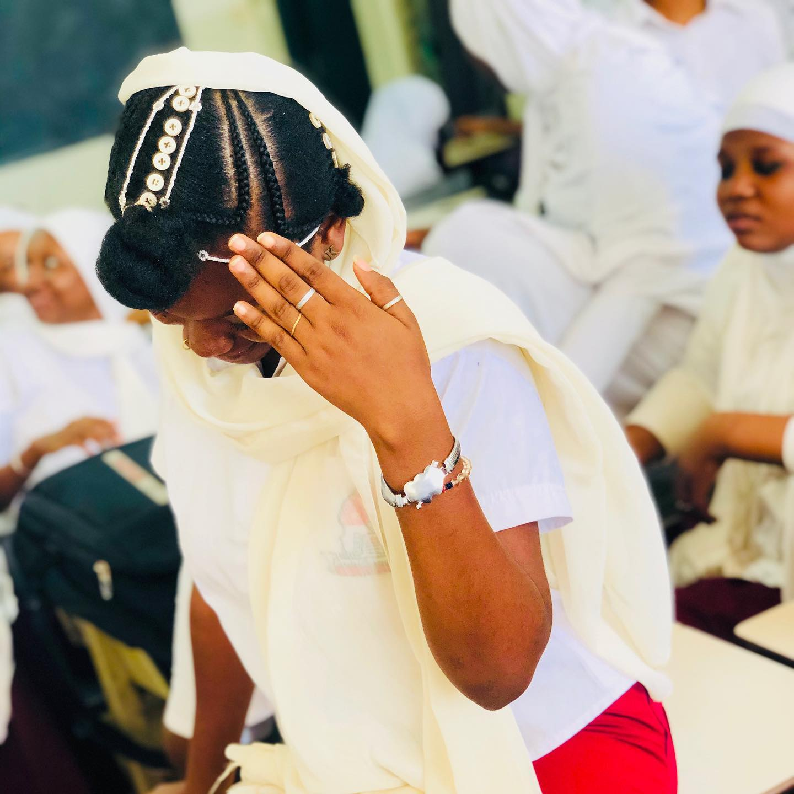

cette page est dedier a une fille qui compte beaucoup pour moi
RAYA cette page est faite pour t 'avouer mes sentiments. Oh ma raya je ne sais pas si tu le savais mais il se trouve que suis amoureux de toi depuis le primaire,c'est vrai qu'au primaire faut avouer que je savais pas ce qu'etait l'amour mais maintenant je sais la nature de mes sentiments.C'est vrai qu'au primaire on c'etait separer mais je n'est pas arreter de penser à toi durant tout ce temps.au lycée quand j'etait venu au mariama j'esperais renouer une relation avec toi mais j'en ai pas eu le moment malheureusement.tu ne sais pas a quel ca m'a fait plaisir d'obtenir ton numero et en plus j'ai meme eu l'occasion de parler avec toi pour la premiere fois et d'entendre par la meme occasion ta magnifique voix pour la premiere fois de ma vie
You Belong To Me (Tu M'appartiens) Voit les pyramides le log du Nil Observe le soleil se lever de l'ile tropicale Rappelle toi juste chérie tous les moment Tu m'appartiens Voit le marché dans le vieil Alger Envoie-moi des photos et des souvenirs Rappelle toi juste quand le reve apparait Tu m'appartiens Et je serais si seul sans toi Peut-etre tu te sentiras seule aussi survole l'ocean dans un avion d'argent Voit la jungle quand elle est mouillée par la pluie Rappelle toi juste quand tu es encore à la maison Tu m'appartiens Oh je serais si seule sans toi Peut-etre que tu te sentiras seule aussi survole l'ocean dans un avion d'argent Voit la jungle quand elle est mouillée par la pluie Rappelle toi juste quand tu est encore à la maison Tu m'appartiens. 
bon retour a la realiter .RAYA j'en doute bien que tu ne ressents pas les memes sentiments que moi.mais c'est la vie on peut pas obtenir tout les personnes qu'ont veut mais dit on peut quand meme rester amis.je te pris de me pardonner d'avoir fait cette page web ci ca te derange.n'empeche sache que je t'aime et ce jusqu'a la fin de ma vie.je ne t'oublierai jamais ma belle.